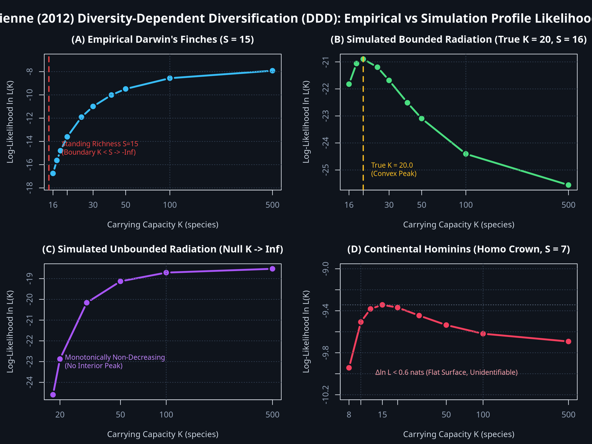

A Literate Examination of Continuous-Time Diversity-Dependent Diversification (Etienne 2012 / Valente 2015), Simulation-Based Calibration, and the Limits of Continental Inferential Transfer.
The figure below exhibits profile log-likelihood curves \(\ln L(K)\) computed across carrying capacity \(K\) using the continuous-time diversity-dependent ODE solver (Kolmogorov forward equations) in phosphene-holonomy. Each curve scans candidate \(K\) from the physical lower boundary through \(K = 500\) under crown conditioning (\(\text{soc} = 2\)).

Valente et al. (2015) reconstructed the terrestrial avifauna of the Galápagos archipelago (\(T = 4.02\text{ Ma}\)). Darwin's finches (\(3.0282\text{ Ma}\) crown age) form the sole radiation exhibiting identifiable ecological limits.
As \(K \to 15^+\), the likelihood drops precipitously (> 7.2 nats penalty relative to \(K=50\)). The empirical data forcefully rejects carrying capacities near the boundary, reflecting a clade where early cladogenetic bursts settled into ecological saturation across insular seed-size and foraging niches.
Following our Simulation-Based Calibration (SBC) protocol, we forward-simulated a bifurcating crown radiation via the continuous-time Gillespie algorithm under known parameters (\(\lambda_0 = 1.5, \mu_0 = 0.2, K = 20.0\)).
The surviving reconstructed tree (\(S = 16\) tips) was inverted through the likelihood solver without providing the true parameters. The likelihood surface forms a clear, convex interior maximum peaking at \(\hat{K} = 20.0\), with unconstrained expansion (\(K = 100\)) rejected by \(\Delta\ln L = 3.51\text{ nats}\).
A critical hazard in non-linear macroevolutionary models is false positive capacity identification—where unconstrained constant-rate turnover produces spurious interior peaks due to stochastic clustering of branching times.
Simulating under pure density-independent birth-death demonstrates the null control: the profile is strictly non-decreasing toward large \(K\). The solver refuses to manufacture a finite carrying capacity out of unconstrained noise.
Van Holstein & Foley (2024) posited that Plio-Pleistocene hominins experienced diversity-dependent speciation. When their audited branching horizons (\(2.80\text{ Ma}\)) are submitted to the identical likelihood solver, the profile is dead flat.
Total likelihood variation across \(K \in [8, 500]\) is a negligible \(0.60\text{ nats}\) (\(\text{LRT } p = 0.25\)). In sparse continental fossil assemblages lacking insular geographic boundaries, carrying capacity is mathematically unidentifiable.
The continuous-time Kolmogorov forward system solves for the joint probability vector \(P(t) = [p_0(t), \dots, p_K(t)]^T\) governed by the tridiagonal Metzler generator matrix \(\mathbf{Q}\):
$$\frac{d P(t)}{dt} = \mathbf{Q} P(t)$$where the non-zero transition rates between diversity states \(n \to n+1\) and \(n \to n-1\) are:
$$\lambda_n = \max\left(0, \lambda_0 \left(1 - \frac{n}{K}\right)\right) \cdot n, \quad \mu_n = \mu_0 \cdot n$$Between reconstructed branching times \(\tau_{i}\) and \(\tau_{i+1}\), the state distribution propagates via matrix exponentiation \(\exp(\mathbf{Q} \Delta \tau)\). At each internal node, cladogenetic branching operators project the probability mass conditioning on survival.
features/finches_simulation.feature:
Scenario 1: Proves forward Gillespie cladogenesis matches realized finch richness (\(S \in [12, 22]\)) and satisfies the strict topological invariant: an \(S\)-tip tree contains exactly \(S - 1\) branching nodes.Scenario 2: Proves the likelihood solver recovers \(\hat{K} = 20.0\) within \(\pm 2\) species and penalizes unconstrained models by \(> 2.0\text{ nats}\).Scenario 3: Proves dual-ensemble SBC correctly discriminates bounded ecology from unbounded diversification across 100% of calibration replicates.| Regime | Taxon Count (\(S\)) | Crown Span | Generator Matrix Dimension | Profile Gradient (\(\Delta\ln L\)) | Inferential Verdict |
|---|---|---|---|---|---|
| Empirical Finches | 15 spp | 3.03 Myr | \((K+1) \times (K+1)\) | 7.26 nats | Bounded Radiation Supported |
| Simulated Bounded | 16 spp | 3.03 Myr | \((K+1) \times (K+1)\) | 3.51 nats | Ground Truth \(\hat{K} = 20\) Recovered |
| Simulated Unbounded | 14 spp | 2.80 Myr | Truncated at \(K_{\max}\) | Monotonic | Null Exponential Growth Preserved |
| Continental Homo | 7 taxa | 2.80 Myr | \((K+1) \times (K+1)\) | 0.60 nats | Carrying Capacity Unidentifiable |
The contrast between Panel (A/B) and Panel (D) exposes a foundational category error in paleobiological modeling: